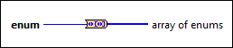
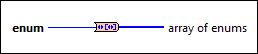

Enum to Array of Enums VI
Owning Palette: Conversion VIs and Functions
Requires: Base Development System
Creates an array of enums with the same number of elements as values in the enum.

 Add to the block diagram Add to the block diagram |
 Find on the palette Find on the palette |
Owning Palette: Conversion VIs and Functions
Requires: Base Development System
Creates an array of enums with the same number of elements as values in the enum.

| Add to the block diagram |
Find on the palette |